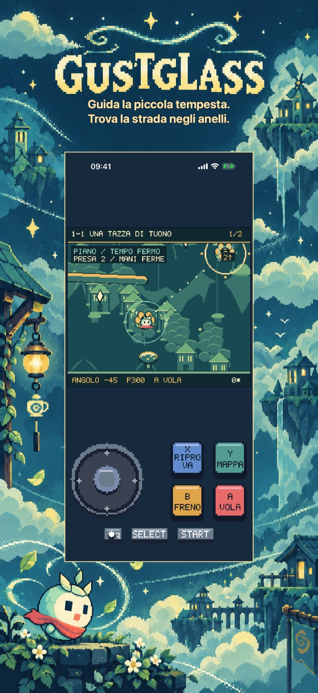
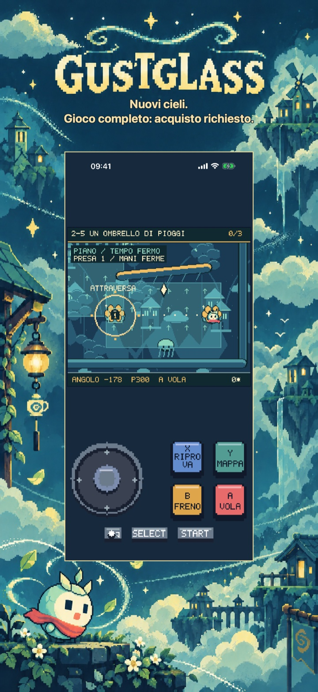
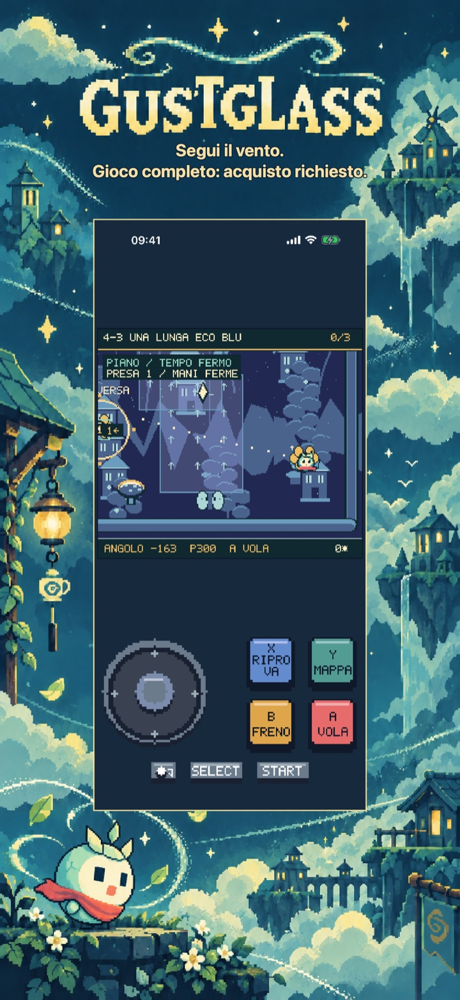
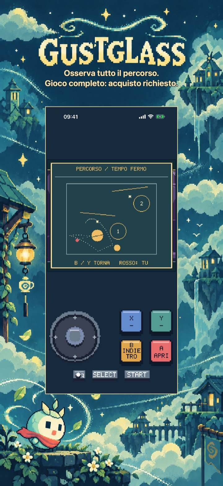
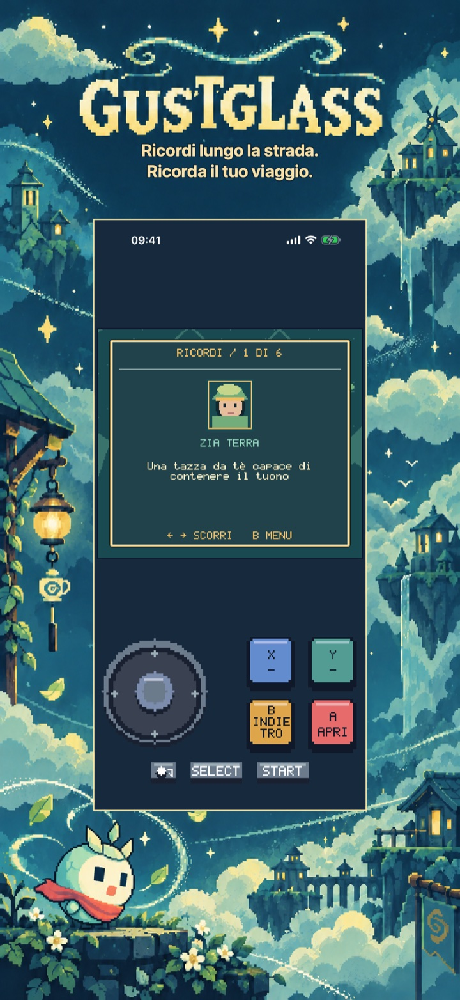
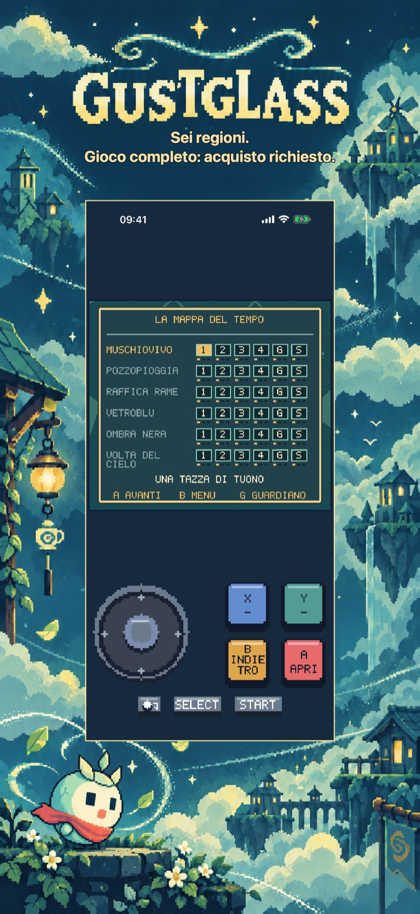

Gustglass: Sentieri di vento
Gustglass: Sentieri di vento
Guida Mica tra ampi anelli di vento e rimbalzi morbidi. Pianifica, lancia e riprova in sei regioni, 30 percorsi e sei burrasche. Prima regione gratuita.
In arrivo sull’App Store
La prima regione: cinque percorsi narrativi completi, compreso quello del Guardiano.

Avventure in pixel art
Un viaggio proprio di questo gioco
Sei regioni includono 30 percorsi narrativi, con sei guardiani, e sei burrasche facoltative. Raccogli frammenti e marchi di par, fino a 108 marchi cumulativi. Nessun limite di vite. Il tempo di pianificazione non cambia lo stesso tiro; i tentativi conservano anelli e frammenti. Il viaggio viene salvato localmente.
Comincia con l’inizio gratuito
La prima regione: cinque percorsi narrativi completi, compreso quello del Guardiano.
Sblocca altre cinque regioni, altri 25 percorsi narrativi, tutte e sei le burrasche, tutti i ricordi e la storia completa con il finale.
Acquisto una tantum · Senza annunci · Senza abbonamento
Gustglass: Sentieri di vento
Guida una piccola tempesta
Trova la strada di casa per Mica, una piccola tempesta in un guscio di seme crepato.
Pianifica un volo ripetibile tra ampi anelli di vento numerati. Regola angolo e potenza nel nido, lancia, sterza dolcemente e frena in aria. Rimbalzi, rami, vento e acqua formano la strada. Riprovare ripristina angolo, potenza e fase del tempo; la scia blu e i punti previsti aiutano a correggere.
Sei regioni includono 30 percorsi narrativi, con sei guardiani, e sei burrasche facoltative. Raccogli frammenti e marchi di par, fino a 108 marchi cumulativi. Nessun limite di vite. Il tempo di pianificazione non cambia lo stesso tiro; i tentativi conservano anelli e frammenti. Il viaggio viene salvato localmente.
La prima regione: cinque percorsi narrativi completi, compreso quello del Guardiano.
Sblocca altre cinque regioni, altri 25 percorsi narrativi, tutte e sei le burrasche, tutti i ricordi e la storia completa con il finale.
Senza pubblicità, account, analisi o abbonamenti. Un acquisto non consumabile sblocca il gioco completo in modo permanente. Apple StoreKit gestisce acquisti e ripristini; il prezzo appare prima della conferma. Include inglese, spagnolo, francese, tedesco e italiano. Tutto il contenuto è incluso localmente.
Dentro il gioco
Dentro il gioco
Sei viste native mostrano l’idea principale, altri due mondi, maggiore profondità, le ricompense del viaggio e il titolo o l’atlante.
Trova la strada negli anelli.

Gioco completo: acquisto richiesto.

Gioco completo: acquisto richiesto.

Gioco completo: acquisto richiesto.

Ricorda il tuo viaggio.

Gioco completo: acquisto richiesto.
Video di gioco in inglese
Un video di gioco di 24 secondi in inglese. I contenuti aggiuntivi richiedono un acquisto unico del gioco completo.
Aiuto e assistenza
Hai domande su Gustglass: Sentieri di vento?
Trova risposte pratiche su comandi, progressi salvati, capitolo gratuito e acquisto del gioco completo.
Come si gioca?
Dove vengono salvati i progressi?
Cosa si può giocare gratis?
Cosa sblocca l’acquisto del gioco completo?
Acquisto una tantum · Senza annunci · Senza abbonamento
Come ripristino un acquisto?
L’acquisto è in attesa o lo store non è disponibile. Cosa posso fare?
Contatta l’assistenza
Fai una domanda o segnala un problema. Indica il nome del gioco, il dispositivo e cosa è successo.
Contattaci su GitHubLe segnalazioni sono pubbliche e richiedono un account GitHub.